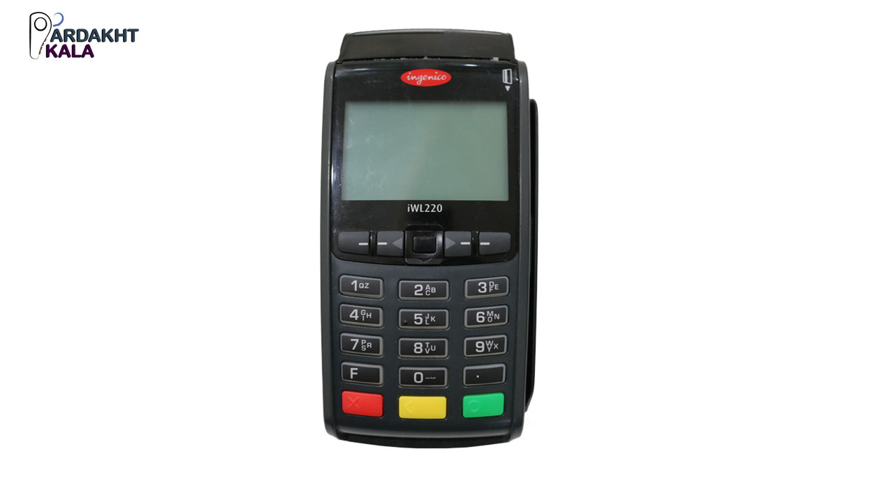

فناوری پکس و پیرو آن دستگاه کارتخوان پکس در سال 2000 در شنزن چین تاسیس شد که یک شرکت خصوصی با دفتر در فلوریدای آمریکاست.این شرکت با هدف دستیابی به رهبری جهانی در ارائه پیشرفته ترین راه حل های پرداخت امن به مشتریان در سراسر جهان ایجاد شده است.کارتخوان های پوز آن یکی از برترین دستگاه های کارتخوان است که در بیش از 100 کشور جهان توزیع شده است.
castle
کارتخوان سیار کستل در بستر سیم کارت کار کرد و تراکنش را با استفاده از اینترنت مبتنی بر سیم کارت انجام می دهد
ingenica
دستگاه پوز اینجنیکو220 یک دستگاه جمع و جور است.این دستگاه نزدیک به 300 گرم وزن دارد و که این یک حسن است. چرا که با وزن کم جای کمی هم گرفته و باطری قردتمند 2200 میلی آمپری همراهش است. البته استفاده از ریزپردازنده قدرتمند آرم 9 باعث شده که بدون معطلی تراکنش را به انجام برساند.
